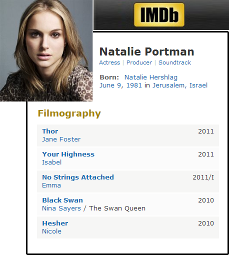
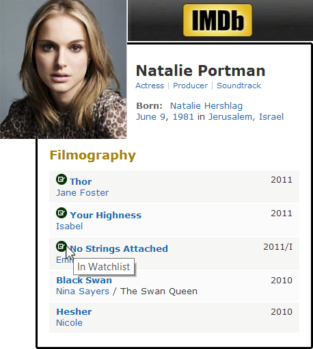

IMDB Watchlist Checker is an extension for Google Chrome and Mozilla Firefox. It adds a checkbox on the left of any movie that are in the watchlist of an IMDB user when he/she visit the page of an actor/actress. Following images demostrate by them self the utility of this extension. Is good to clarify that IMBD provide this feature in their mobile applications but not in the website.
You can install it from Google Play for Google Chrome or from Firefox Add-ons for Mozilla Firefox. Also you can download the source code from GitHub.